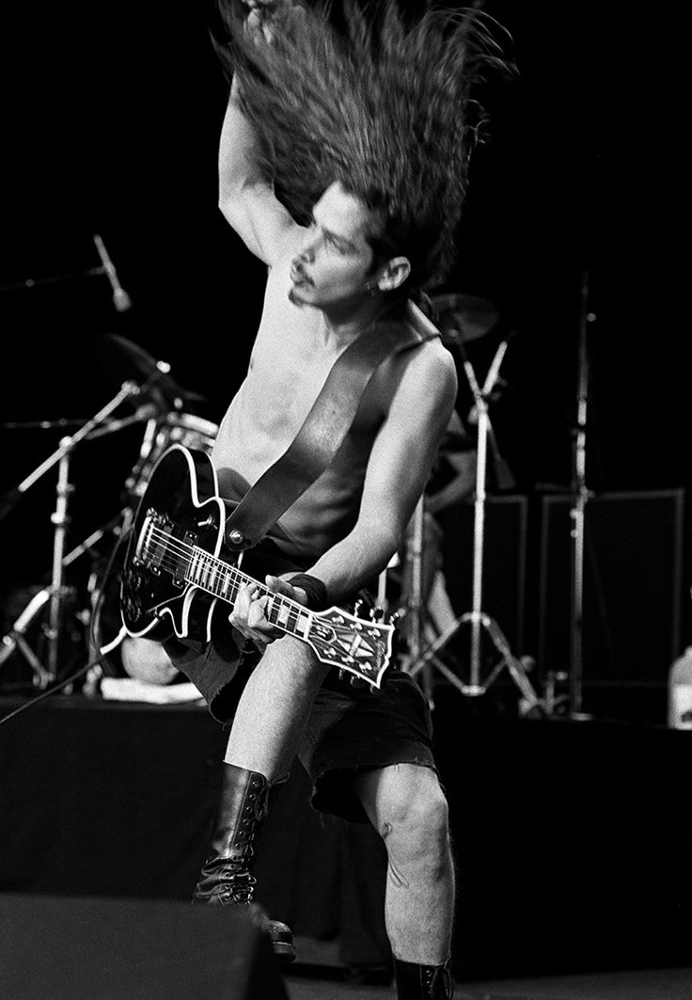
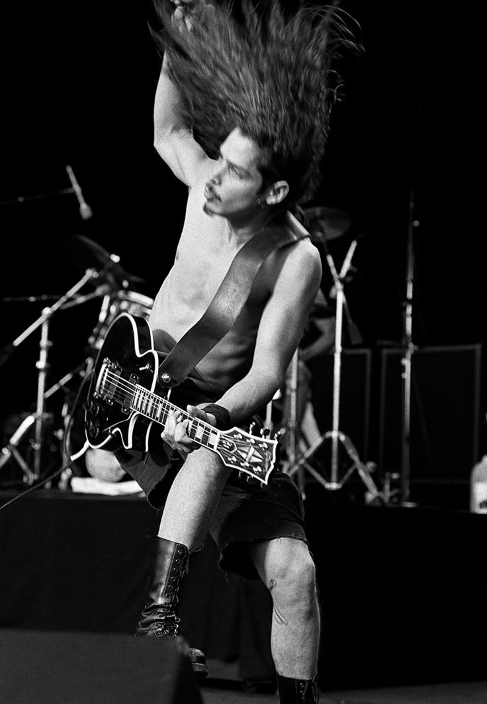

Chris Cornell
1964 - 2017
THE VOICE OF A GENERATION, AN ARTIST FOR ALL TIME.


 



"At the end of the day it's the fans who make you who you are."
Here's a career time line of Chris Cornell's life:
- Early 1980's - Before becoming a successful musician, he worked as a sous-chef at a restaurant named ‘Ray's Boathouse.’ In the early-1980s, he became a member of the band ‘The Shemps,’ and met bassist Hiro Yamamoto.
- 1984 - ‘Soundgarden’ was formed in 1984, and consisted of his jamming partners, Thayil and Yamamoto. Later, Matt Cameron joined the band as its permanent drummer, allowing Cornell to concentrate on vocals.
- 1990 - In 1990, he formed ‘Temple of the Dog’ as a tribute to his friend, late Andrew Wood, lead singer of ‘Mother Love Bone.’ Cornell released an album the following year.
- 1996 - Soundgarden’s final album ‘Down on the Upside’ released in 1996, and included singles, such as ‘Pretty Noose,’ ‘Blow Up the Outside World,’ and ‘Burden in My Hand.’ The album did not do well commercially.
- 1999 - He began writing and recording with guitarist Alain Johannes and keyboardist Natasha Shneider of the band ‘Eleven.’ His first solo album ‘Euphoria Morning’ released in 1999 and included the single ‘Can't Change Me.’
- 2001 - In 2001, he joined hands with three other musicians to form ‘Audioslave.’ Apart from him, the band consisted of former instrumentalists of the band ‘Rage Against the Machine’ - Tom Morello, Tim Commerford, and Brad Wilk.
- 2005 - Audioslave's second album ‘Out of Exile’ released in 2005, and debuted at the top of the ‘Billboard 200’ chart.
- 2006 - ‘Revelations,’ Audioslave's third album, was released in 2006. A special marketing campaign placed the album’s art concept on ‘Google Earth’ in the South Pacific. The art concept was placed as a fictional island called ‘Audioslave Nation.’
- 2006 - He co-wrote and performed the theme song ‘You Know My Name’ for the 2006 ‘James Bond’ film, ‘Casino Royale.’ The song became the first ‘Bond’ theme song since ‘Octopussy’ to not have an eponymous title.
- 2007 - His 2007 solo album ‘Carry On,’ produced by Steve Lillywhite, was made in collaboration with his friend and legendary guitarist Gary Lucas.
- 2009 - ‘Scream,’ his third solo album was released in 2009. He toured across North and South America, Europe, and a total of 21 nations to promote the album. The tour included a triumphant open-air show in Tel Aviv.
- 2010 - In 2010, ‘Soundgarden’ made a historic reunion during Chicago's ‘Lollapalooza’ festival, and released their retrospective album ‘Telephantasm.’ They also toured through places, such as Australia, New Zealand, Europe, and North America.
- 2009 to 2011 - A series of solo acoustic shows took place as part of the 'Songbook' tour between 2009 and 2011. The shows took place in places like the USA, Canada, New Zealand, Australia, and South America, and received positive reviews.
- 2011 - In 2011, he released ‘The Keeper,’ an original song written for the film ‘Machine Gun Preacher.’ Initially, the song was exclusively available as part of the ‘Donate to Download’ campaign for children's charity in Africa.
- 2011 to 2013 - He released an acoustic live album titled ‘Songbook’ in 2011; it was his first live album as a solo artist and featured songs recorded during his 'Songbook' tour in North America. He continued his ‘Songbook’ tour in 2012-13, and performed at many venues in Europe and the US.
- 2015 - In September 2015, he released his fourth and final studio album ‘Higher Truth.’ It received favorable reviews from music critics.
- 2017 - His last solo release before his untimely death was the charity single ‘The Promise,’ which released in March 2017.
- May 18, 2017 - He was found dead in his hotel room at the ‘MGM Grand’ in Detroit on May 18, 2017. He had performed in a show with ‘Soundgarden’ at the ‘Fox Theatre’ the previous evening. The cause of his death was determined as suicide by hanging. He was 52 years old.
"You’re a prince, you’re a snare, you’re a shadow You’re twilight and star burn and shade You’re a sage, you’re a wound shared, you’re masked You’re a pillar of smoke, you’re a platinum heart You’re a brush fire, you’re caged, you’re free Your vision pierces, you do not see You are pieces strewn on the hillside You’re open armed, you’re armed, you’re true You’re a revealer of visions, you’re the passenger, you’re a never fading scar You’re twilight and star burn and shade You’re the secret veiled, you’re the secret revealed, you’re surrounded no more You’re not there, now you’re always here You’re a handsome groom, a loving father, a haunted stairwell You’re the clear bell ringing, the mountains echo your song Maybe no one has ever known you You are twilight and star burn and shade"
-- Tom Morello